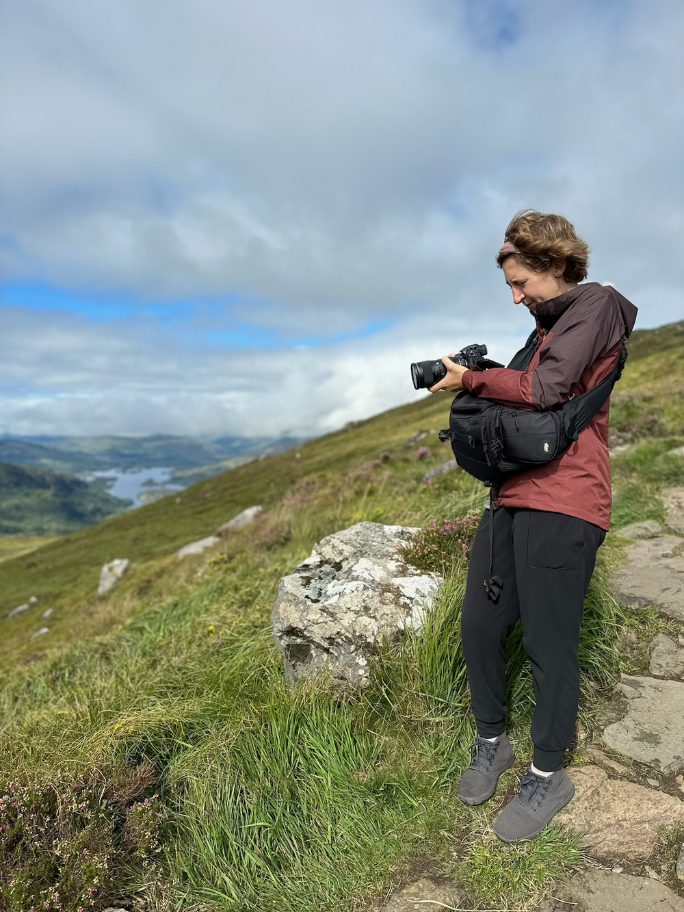
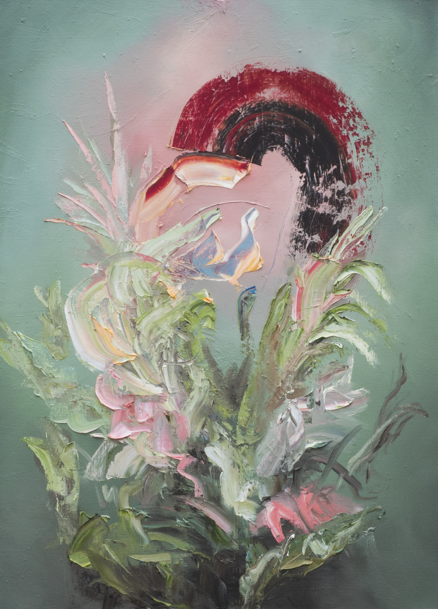

What shitty paintings and the Artist’s Way taught me.
I skipped my morning pages but here I am. For probably 5 minutes. Ah.
I’ve been pretty quiet at the industry days in Chicago. But I think it’s ok. I’m trying to feel more like myself. Do my thing. What’s right for me. That’s the best way to channel me and my creative spirit.
So today I might not make any lasting relationships. I’m not sure!
A pitch for film—
To make a movie that only you could make. That the film is you. And shows you in some way.
Under the new camera equipment, connections, business development, distribution strategies, and fundraising is just me… sometimes with a camera. And like I do with my morning pages, I want to give myself some slack, let go, and allow myself to make mistakes again.
I used to do this before when I was a painter, but I somehow forgot. To make something unfathomable to me, a gift from the universe, with the remnants of something really, really shitty.
I made this painting one afternoon over a shitty painting. The colors in the original painting made me feel unsettled and just icky. I would attach the reference photo, but I lost it because it was just ew, made me feel a little pukey. I let it dry, sit there for a while, and moved on to other pieces.
But then, I had the most insane weekend and I was ready to paint. I had a vision, grabbed some reference photos, and a plan to paint over that shitty painting and make something better.
My painting approach is spontaneous and athletic. The marks were coming naturally and flowing. I felt full of force and power and I was in sync with the paint. ;)
I was ready for my last move of the painting, I realized it was getting good and I had one last move to finish it… I took out my painting knife and I scraped on yellow paint with confidence. Only to my horror, I looked at my mark and saw BLUE! I looked down at the knife, did I dip my knife in the wrong color? What just happened?!
I looked back…I had scraped through my new painting to reveal blue from the shitty painting underneath. I cocked my head to the right and looked at it again…
I took a deep sigh—it was perfect.
I would have never made that choice consciously. I felt grateful and light. Grateful for that shitty painting and tapping into a deeper understanding of art and the universe and the way things connect and collaborate in ways you’d never expect.
Sometimes we’re going to make shitty paintings. And films. And drawings. And decisions.But the Artist’s Way has helped me tap into my sensibility.
Letting go isn’t giving up—it’s giving me space so I can grow and float and think. I’m remembering how to open up.
 back